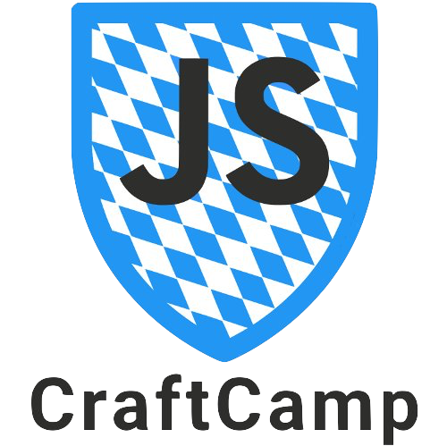

We are happy to announce the sister-event
JSCraftCamp

8th+9th October 2016, Munich
Went to a js code retreat in April with @wolframkriesing - noticed a marked improvement since!
As a past attendee, this event has had a profound impact on my experience as a developer.
Life is not the same after #tdd // thanks and looking forward to #jscr6
A CodeRetreat is a day-long, intensive practice event, focusing on the fundamentals of software development and design. This FREE event gives the opportunity to practice TDD, Clean Code and Refactoring for a whole day. This isn’t a conference! Rules are totally different, attendees take actively part in the coding experience: act a lot, listen very little.
The JavaScript CodeRetreat is a more focused CodeRetreat.
We try to focus even more on the craftsmanship, even more
on one language in order to dive even deeper and find out
more about how to become better. Never done it before?
Just come and have fun doing your craft!
There is none near you? Make the next one happen in your city.
Worldwide, in the best case :) This event is always organised in several cities simultaneously. You can host it in your city too! See the locations listed on the Event page to check if a city near you is joining. If not, host one yourself, or ping a local JavaScript user group to ask for hosting it. Just follow the instructions on the Event page, and you’ll easily get your city listed on jscoderetreat.com. You’d love to host it, but you don’t know where to start from? Find all info on this site.
Register now before there is no seat left